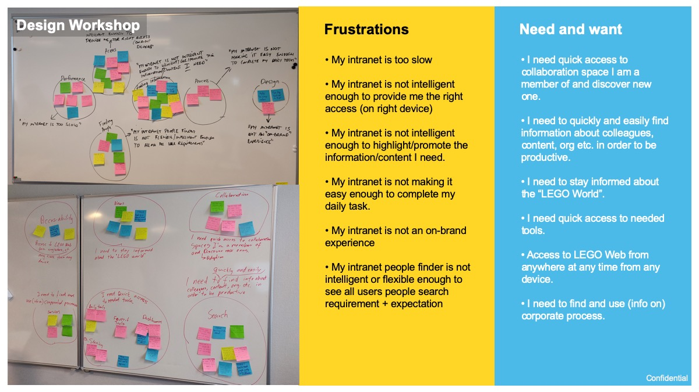
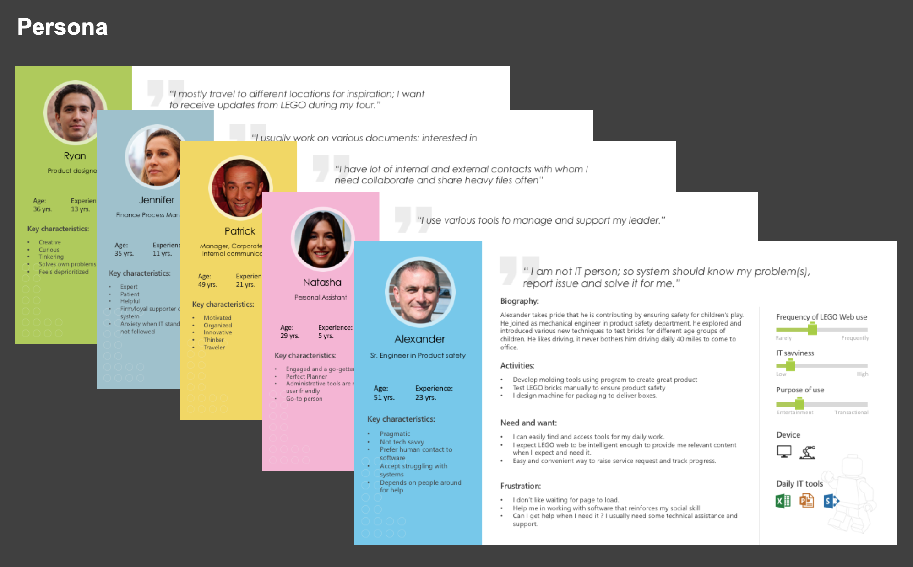
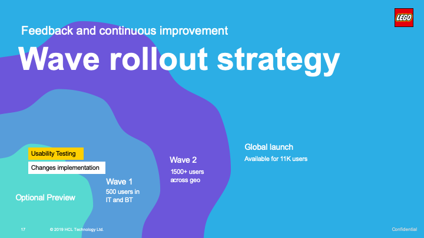

Overview
Every organization has distinct use of the intranet, some use it for sharing corporate agenda, some use it as a gateway to employee tools, some use it for sharing information about organizations structure, policy, processes and some use it for product and project management purpose. Depending on the size of the organization and purpose of use, an intranet can be very complex.
LEGO intranet for LEGO users is a prime source of information regarding corporate agenda and updates. It also serves as a home for providing access to different business sites, enabling service portals, people, processes, and organization.
Challenges
Over the period LEGO was receiving constant input from users about LEGO Web, most of them were negative feedback and complaints. They were talking about:
- Frustrating search and findability
- Poor performance across geography
- Old school design, not mobile friendly
This was also reflecting in yearly satisfaction survey and benchmark report.
Approach:
User Research
Design workshop is a great place to start the user research. It helped us align the customer expectations and user need. Also, it helped understand the mental model of users for the current state and their pain points.

User group and Persona: Identifying user groups and creating persona is another crucial step that helps with some level of user empathy. We created five persona representing enablers, content creators, communication team, leadership, and creatives.

Interviews and feedback: Qualitative input from the users has helped dig deep to understand the root cause of the problem. For example, past experience with poor search results has developed distrust on the search and they ignore the feature even highlighted on the screen. Similarly, many of the users liked the current design and structure, simply because they are familiar with the interface and navigation.
User needs aligned with business expectations
Business and stakeholders expectations are important but only when it is aligned with end users need. Research has helped us identify these focus areas of improvement:
- Improved Findability thorough search and navigation
- Personalized and relevant content
- Intelligent and responsive system
- Better performance across geographies
- Modern design reflecting LEGO brand identity
- On the go mobile accessibility
Challenges and solutions
- Managing message flow contributed by everyone: Important message from different business groups, updates from service areas, anniversary, people-related information all kinds of messages being created by anyone in the organization. Providing a platform for unanimous editors and displaying them on the home page.
Approach: Configuration
Grouped all messaged in 4 types- service update, people news, anniversaries, and message for any other kind of message. Created different sites for all four types and using news web-part to display on home page aggregating messages from these four sites. It also displays site name as tags to identify message types.
-
UI and style limitations: Muted navigation (mega-menu):SharePoint Hub navigation does not have the option to apply color or manage font size and weight to make it more visible.
Three-level of navigation occupying so much important page space, with limited option to hide.
Approach: Customization
Injecting CSS as an extension to apply styles and hide unwanted site navigation bar. Custom theme to apply LEGO brand identity.
-
Consistency in design across service portals: 50+ Service sites at 12 locations owned and managed by different service owners at their respective locations. Providing consistency in design and experience was a big challenge.
Approach: Design Standards and Guide
LEGO Minifigures representing different service and assigning unique color for each service area has helped. Sites can be easily identified visually.
Helping owners setting up home page for their site and providing guiding principle has helped govern consistency in service sites.
Implementation and roll-out strategy

- Communication and user adoption: Large section of users were involved in this redesign process one way or other. They were filling out surveys, sharing feedback through form or being interviewed. The design decisions were participatory and informed. Clear communication about the upcoming changes has reduced the initial rejection and helped in better adoption.
- The wave model of rollout: New design was released as optional preview as a first step, this helped capture the initial impressions and address obvious concerns that were missed. Later it was released to a pool of 500 users from a couple of departments. They provided great feedback and suggestion to improve. And finally, it was already a buzz among colleagues we had smooth launch to everyone (13K users)
Defining and measuring success
To measure success KPIs are defined and continuously being monitored. Communication reach has improved by 50% and user engagement is improving as content is now mobile accessible. NPS and SUS are another two successes that we continuously track. Great user satisfaction score in the IntraTeam survey has put our intranet ahead of 50 other intranets in EU, and we won the best Intranet award in IntraTeam event 2020. 🙂